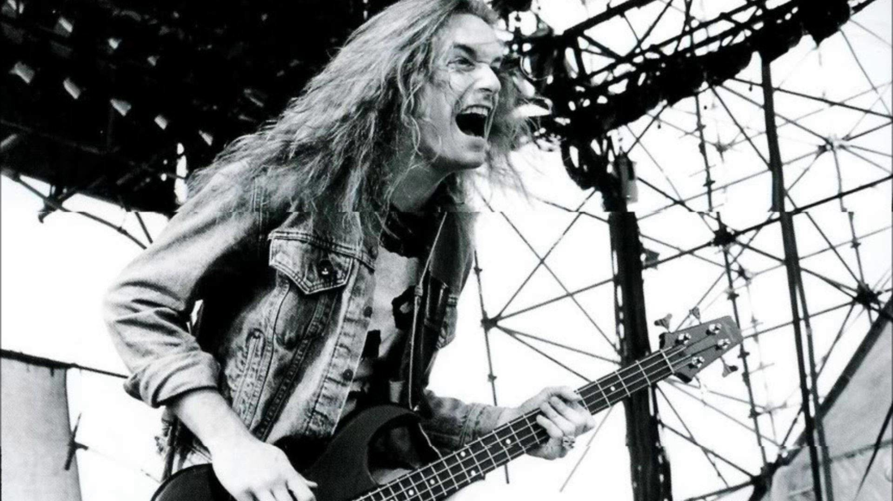

Em 1985, Clifford Lee Burton fez a sua estreia
no tradicional Day On The Green, festival que
ocorreu em Oakland, Califórnia entre os anos 70 e 90.
Clifford Lee "Cliff" Burton (Castro Valley, 10 de fevereiro de 1962 — Ljungby, 27 de setembro de 1986) foi um baixista e compositor americano que ficou conhecido por seu trabalho na banda de heavy metal Metallica, de 1982 a 1986. Como instrumentista ele era conhecido por seu estilo, que fazia uso de distorção e outros efeitos, muitos dos quais de uso na guitarra, como em sua canção mais característica, "(Anesthesia) Pulling Teeth".